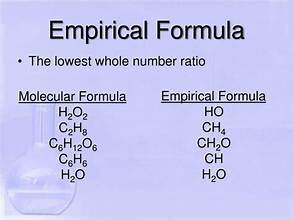
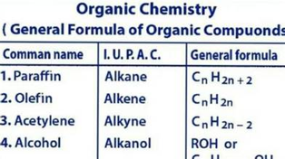
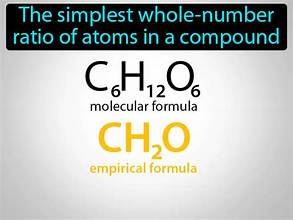
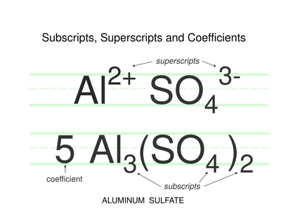

Simplest whole-number ratio
| Vietnamese | — |
|---|---|
| English | Simplest whole-number ratio |
| Pronunciation | /ˈsɪmplɪst ˌhoʊl ˈnʌmbər Tỉ lệ số nguyên tối giản ˈreɪʃioʊ/ |
| Word type | noun (as labelled in the PDFs) |
Topic 3 — Meaning (Vietnamese)
Tỉ lệ nhỏ nhất giữa các nguyên tử cấu thành được biểu diễn bằng các số nguyên
Meaning (English)
The smallest ratio of constituent atoms expressed using whole numbers (Tỉ lệ nhỏ nhất giữa các nguyên tử cấu thành được biểu diễn bằng các số nguyên)
Example
The ratio 2:6:2 can be simplified to 1:3:1, which is the simplest whole-number ratio. (Tỉ lệ 2:6:2 có thể được rút gọn thành 1:3:1, tức tỉ lệ số nguyên tối giản.)
Images from the PDFs





